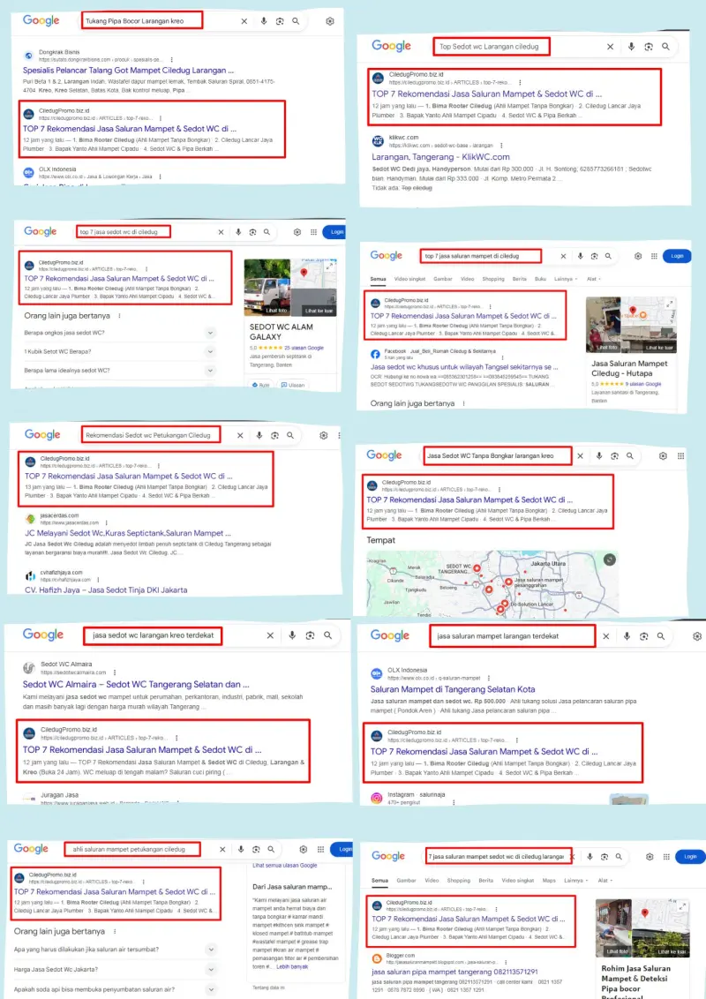

PEMBERITAHUAN NOMINASI:
TOP 7 JASA SALURAN MAMPET CILEDUG RAYA 2026
Kepada Yth. Pemilik/Manajemen Jasa Sedot WC & Ahli Pipa. Anda diundang untuk mengklaim slot publikasi darurat di portal digital Halaman 1 Google kami.
📈 Dominasi Pencarian Panggilan Darurat
Artikel CiledugPromo berjudul "Top 7 Rekomendasi Jasa Saluran Mampet & Sedot WC di Ciledug, Larangan & Kreo (Buka 24 Jam)" saat ini menjadi rujukan utama warga Tangerang yang mengalami kepanikan sanitasi.
Ratusan calon pelanggan melihat halaman ini setiap bulannya saat mereka mencari tukang via Google di tengah malam:

Silakan verifikasi dan lihat langsung artikel kami yang sedang Live di Google:
👁️ LIHAT ARTIKEL LIVE (KLIK DI SINI)🎁 Undangan Klaim Slot (100% GRATIS)
Saat ini, beberapa slot di artikel kami masih menggunakan nama anonim/fiktif sebagai placeholder sementara.
Berdasarkan pantauan tim redaksi terhadap operasional layanan Anda di lapangan, kami ingin menawarkan Anda untuk mengganti nama fiktif tersebut dengan Nama Jasa Anda secara GRATIS.
SOP Publikasi Basic Listing (Gratis):
- Pencantuman Nama Resmi Jasa Sedot WC/Mampet.
- Pencantuman Deskripsi Singkat Layanan & Area.
- Pencantuman Alamat Standby / Pangkalan.
- Tidak Termasuk: Tombol Chat WhatsApp Darurat Aktif.
- Tidak Termasuk: Tautan Website/Navigasi Maps.
*Catatan: Akses tombol panggilan darurat 24 Jam (Live Link) adalah fitur khusus bagi Mitra berstatus VVIP yang akan ditawarkan secara terpisah.
Amankan Panggilan Anda Sekarang
Klik tombol di bawah ini untuk mengirimkan profil jasa Anda agar warga Ciledug bisa menemukan Anda saat panik.
KLAIM & KIRIM DATA JASA SAYA*Slot tersisa: 2 dari 7 Daftar Ahli (Siapa Cepat, Dia Dapat).